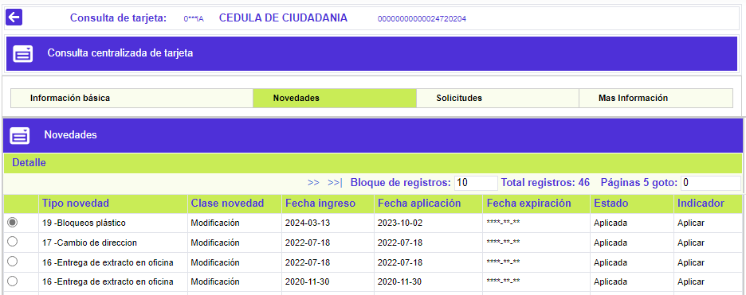
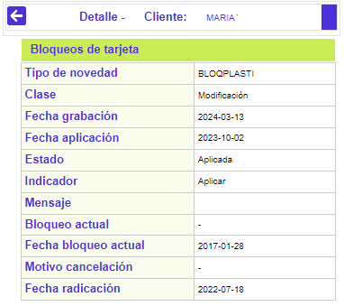
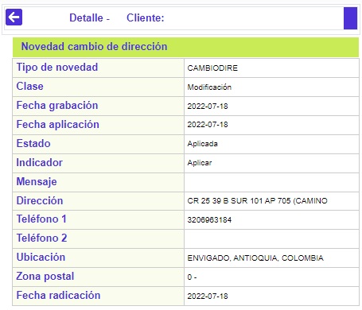

Novedades
En este formulario que se invoca desde la Consulta centralizada de tarjeta, la entidad puede visualizar la información de las diferentes novedades que le han sido aplicadas a la tarjeta. El formulario dispone del enlace a la opción Detalle.

Descripción de campos
|
Tipo novedad |
Campo que muestra la novedad administrativa que se le aplicó a la tarjeta. |
|
Clase novedad |
Este campo indica si la acción ejecutada sobre los datos de la tarjeta, mediante la novedad aplicada se trató de: Adición, Modificación o Eliminación de información. |
Fecha ingreso |
Campo que muestra en formato YYYY-MM-DD, la fecha en la cual se registró o ingresó la novedad en el sistema. |
Fecha aplicación |
Este campo despliega en formato YYYY-MM-DD, la fecha en la que efectivamente se aplicó la novedad y se hizo la actualización de datos a la tarjeta. |
Fecha expiración |
Campo que muestra en formato YYYY-MM-DD, la fecha en la cual será depurado o eliminado del sistema, el registró correspondiente a la novedad aplicada, de acuerdo con lo definido para la misma en la opción novedades administrativas. |
Estado |
Este campo indica si la novedad ya se encuentra Aplicada o está pendiente Por aplicar, lo que determina que, al consultar el detalle de la novedad, se muestren al usuario, los datos nuevos que se están actualizando o los que tenía la tarjeta anteriormente. |
Indicador |
Campo que muestra el resultado del proceso de aplicación de la novedad, y que puede ser Aplicada (cuando terminó existosamente la actualización de los datos), No aplicar (si se ha determinado que la actualización de los datos no se debe hacer) o Error (cuando durante el proceso de aplicación se ha presentado algún tipo de validación o falla que no ha permitido finalizar exitosamente la acción). |
Detalle: Al invocar ese enlace, de acuerdo con cada tipo de novedad, el formulario muestra la información completa de la misma. Cuando el estado de la novedad sea 'Por aplicar' el detalle de la novedad mostrará los datos que se están actualizando para la tarjeta; si el estado es 'Aplicada' el detalle desplegará los datos que la tarjeta tenía antes de aplicarle la novedad.

